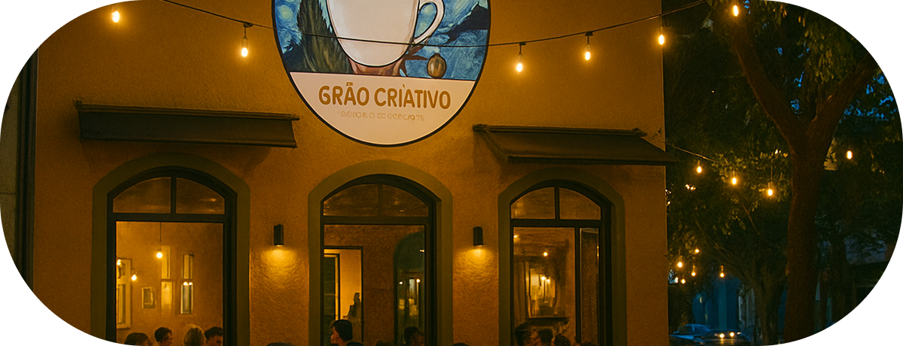
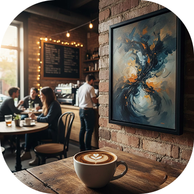

Grão Criativo
A simbiose perfeita entre arte e café.

Sobre a cafeteria
Nascemos do desejo de unir duas paixões: a complexidade de um grão especial e a liberdade da expressão artística. Localizado em uma esquina charmosa da Vila Madalena, o Grão Criativo é mais do que uma cafeteria; é um refúgio cultural em meio à efervescência de São Paulo.
Aqui, as paredes contam histórias tanto quanto as nossas xícaras. Funcionamos como uma galeria viva para artistas independentes, oferecendo espaço para novos talentos exporem suas visões enquanto você aprecia nossa curadoria de sabores. Seja para um espresso rápido ou para passar a tarde imerso em arte, nossa esquina é o seu lugar.
